Análisis de Clustering Espacio-Temporal
Preparación e Integración de Datos
Se trabajó con cuatro fuentes principales: datos mensuales de Temperatura Superficial del Mar (TSM, 1981–2018), Clorofila a (Chl a, 1997–2018), coordenadas de 17 estaciones de medición, e índice ENSO (ONI) de NOAA.
Los datos fueron reorganizados en formato largo (una fila por estación, mes y año), se unieron las variables físicas con ubicación geográfica, y se enriquecieron con una clasificación mensual de eventos ENSO (Niño, Niña o Neutro). El resultado fue un único dataset con información temporal, espacial y climática para cada observación mensual.
Este proceso permitió preparar la base de datos para análisis espacio-temporales como clustering, detección de patrones y evaluación del impacto de ENSO en la región.
Parte 1. Clustering Regional Fijo por Estación
Objetivo
Proponer una regionalización objetiva de la zona costera del Golfo de California con base en patrones oceanográficos medios. Para ello se usaron estadísticas agregadas por estación: TSM, Chl a y ONI.
Preparación de los datos
Se calcularon estadísticas por estación:
- TSM: media, desviación estándar, mínimo y máximo
- Chl a: media, desviación estándar, mínimo y máximo
- ONI: promedio por estación
- Coordenadas fijas de cada estación
Las variables fueron estandarizadas y se aplicó el algoritmo KMeans con k = 4 clusters.
Elección del número de clusters
Se utilizó el método del codo para determinar el valor óptimo de k, observando el punto de inflexión en la gráfica de inercia.
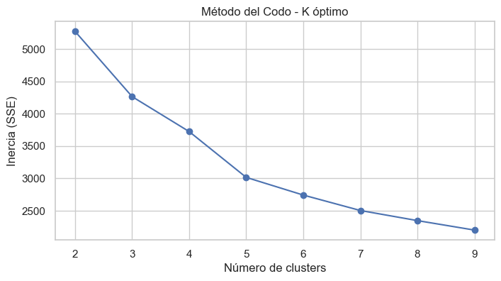
Resultados del agrupamiento
El algoritmo KMeans agrupó las estaciones en 4 clusters geográficamente coherentes. El siguiente mapa muestra la ubicación de las estaciones coloreadas por cluster asignado:
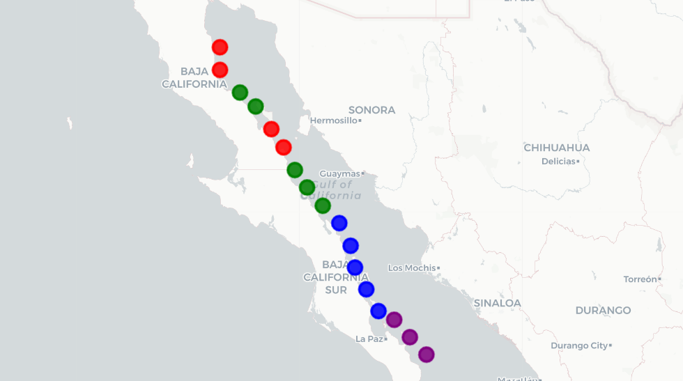
Caracterización de los clusters
| Cluster | TSM_media | Chl a_media | Descripción general |
|---------|-----------|-------------|-----------------------------------------------|
| 0 | 22.99°C | 2.01 mg/m³ | Frío y altamente productivo (norte) |
| 1 | 25.02°C | 0.84 mg/m³ | Cálido y oligotrófico (centro-sur) |
| 2 | 23.55°C | 1.38 mg/m³ | Intermedio en temperatura y productividad |
| 3 | 25.98°C | 0.48 mg/m³ | Muy cálido, baja productividad (extremo sur) |Variación por fase ENSO
Se analizó cómo se comportan TSM y Chl a en cada cluster dependiendo de la fase del ENSO:
- En eventos Niño, TSM aumenta en todos los clusters.
- La Chl a presenta mayor variabilidad durante fases Niña y Niño.
TSM por ENSO y Cluster
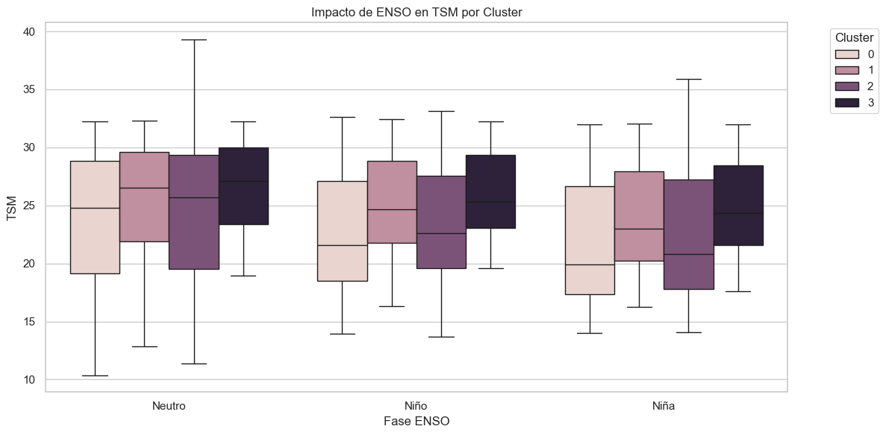
Clorofila a por ENSO y Cluster
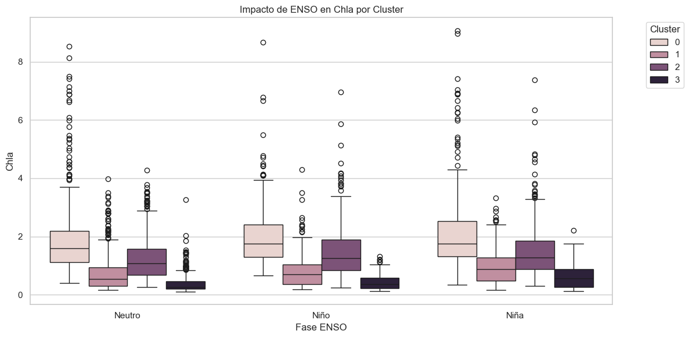
Estacionalidad mensual por cluster
Se calcularon promedios mensuales por cluster para TSM y Clorofila a:
Estacionalidad de TSM
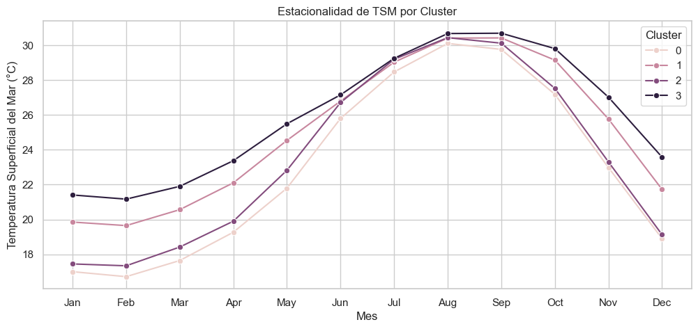
Estacionalidad de Chl a
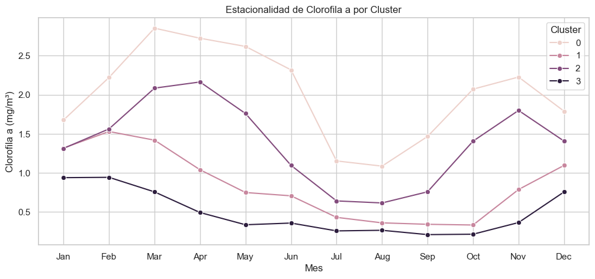
Tendencias interanuales por cluster
Se calcularon promedios anuales de TSM y Chla por cluster para observar tendencias de largo plazo.
TSM promedio por año
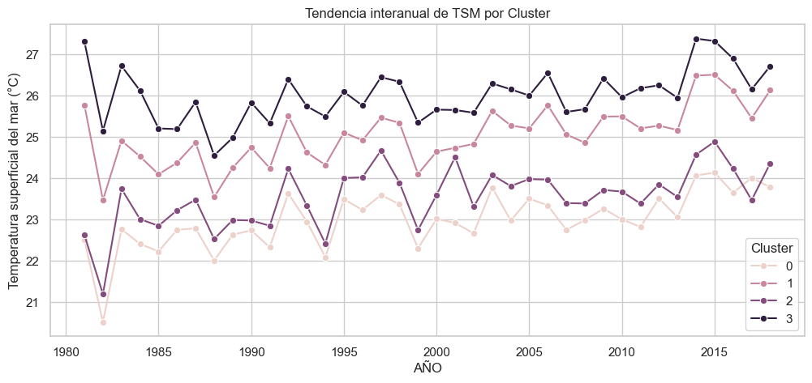
Chl a promedio por año
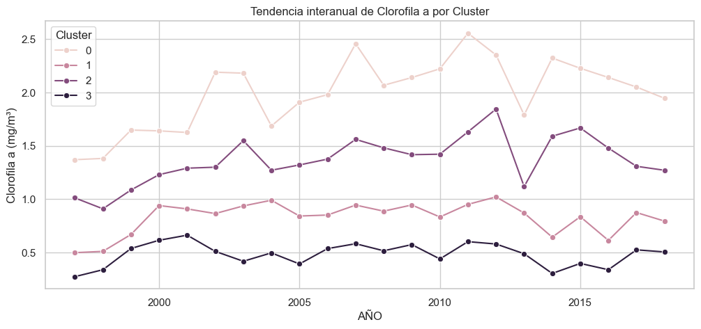
Contribución a los objetivos del proyecto
✅ Objetivo 1: Identifica valores característicos y su estacionalidad. ✅ Objetivo 2: Define una regionalización espacial objetiva. ✅ Objetivo 3: Muestra el impacto del ENSO en TSM y Clh a según región.
Parte 2. Clustering Dinámico Interanual (Estación × Año)
Objetivo
Capturar variaciones ambientales anuales a nivel de estación mediante agrupamiento dinámico. Esto permite identificar patrones recurrentes o transiciones de comportamiento oceanográfico de un año a otro en cada sitio de monitoreo.
Preparación de los datos
Se calcularon estadísticas anuales para cada estación, con las siguientes variables:
- TSM: media y desviación estándar anual
- Chl a: media y desviación estándar anual
- ONI: promedio anual
- Coordenadas geográficas (latitud y longitud, constantes por estación)
Posteriormente, se estandarizaron las variables y se aplicó el algoritmo KMeans con k = 4 clusters.
Distribución y evolución temporal de los clusters
Se analizaron las frecuencias de asignación por cluster a lo largo del periodo. El siguiente gráfico muestra el número de estaciones clasificadas en cada cluster por año:
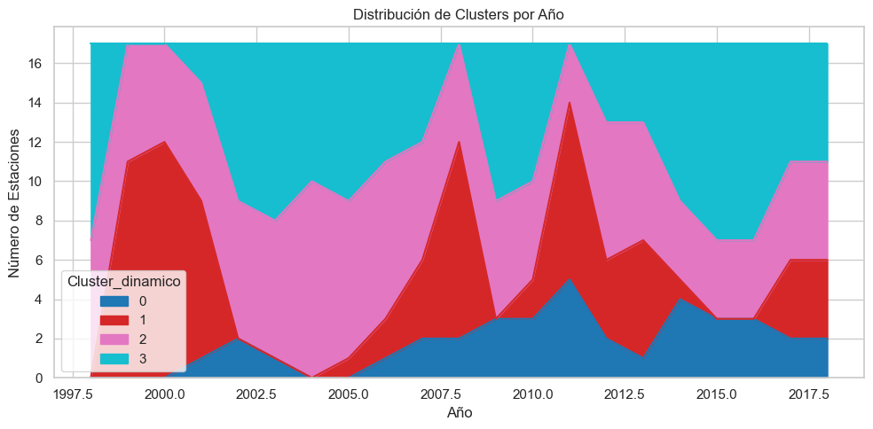
Se observa una dinámica compleja en la que algunos clusters aumentan su frecuencia en años específicos, lo que podría reflejar condiciones ambientales dominantes.
Evolución de los clusters por estación
Se construyó un heatmap que permite visualizar, por estación, cómo ha cambiado su clasificación de cluster entre años:
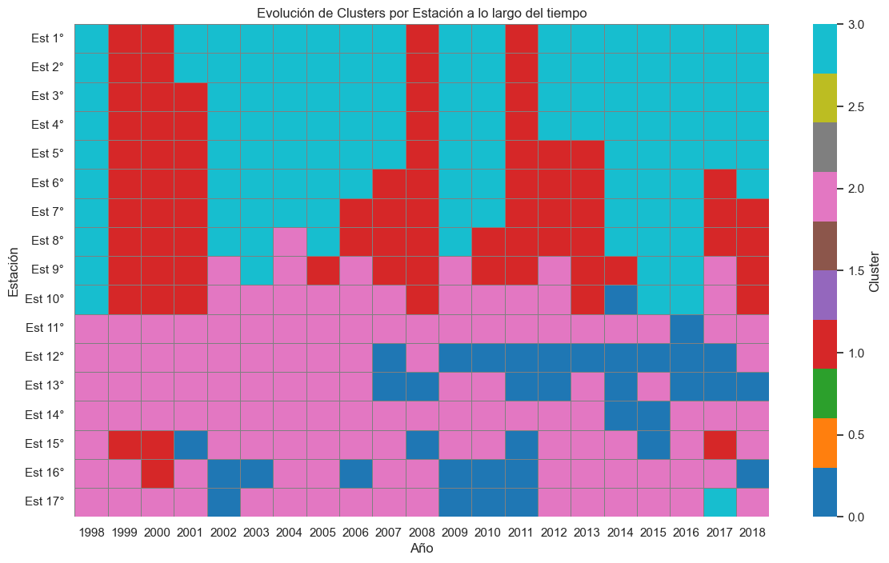
Este gráfico permite detectar estaciones con alta estabilidad interanual (pocos cambios de cluster) y otras con alta inestabilidad, es decir, estaciones cuyas condiciones oceanográficas cambian sustancialmente entre años.
Mapa de inestabilidad anual
Se calculó el número de veces que una estación cambió de cluster entre años consecutivos:
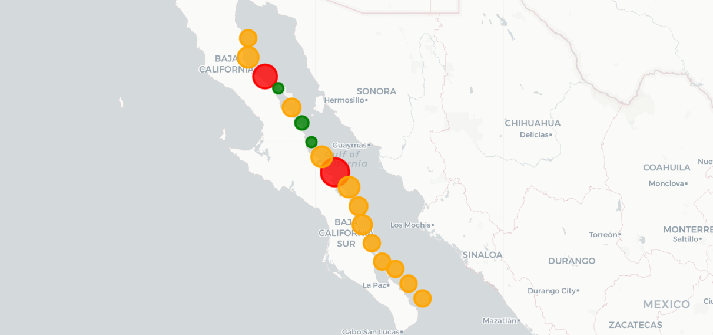
- Estaciones en rojo: alta inestabilidad (más de 10 cambios).
- Estaciones en verde: mayor estabilidad interanual.
Matriz de transición interanual
La siguiente tabla muestra la frecuencia con la que los registros de un cluster cambiaron a otro cluster de un año al siguiente (por estación):
| Cluster Actual → Siguiente | 0 | 1 | 2 | 3 |
|----------------------------|-----|-----|-----|-----|
| 0 | 18 | 0 | 16 | 1 |
| 1 | 2 | 38 | 8 | 26 |
| 2 | 17 | 11 | 88 | 3 |
| 3 | 0 | 29 | 5 | 78 |Esta tabla revela que:
- El Cluster 2 muestra la mayor estabilidad (88 repeticiones sobre sí mismo).
- El Cluster 1 es el más volátil, con frecuentes transiciones hacia el Cluster 3.
Relación con eventos ENSO
Se clasificaron los años como Niño, Neutro o Niña según el promedio anual de ONI. Se graficó el conteo de estaciones por cluster para cada tipo de evento:
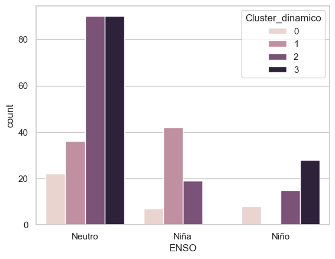
Aunque no hay una relación estricta, se observa que:
- El Cluster 1 predomina en años Niña.
- El Cluster 3 es más común en años Niño.
Caracterización de los clusters dinámicos
| Cluster | TSM (°C) | Chl a (mg/m³) | ONI | Descripción general |
|--------:|----------|----------------|--------|---------------------------------------------|
| 0 | 23.20 | 2.37 | -0.06 | Productivo, ligeramente frío |
| 1 | 24.84 | 0.90 | -0.65 | Cálido y oligotrófico, asociado a Niña |
| 2 | 23.51 | 1.58 | -0.07 | Intermedio en todos los indicadores |
| 3 | 25.94 | 0.70 | +0.20 | Cálido, baja productividad, probable Niño |Duración promedio en un mismo cluster
Se estimó la cantidad de años consecutivos que una estación permaneció en el mismo cluster:
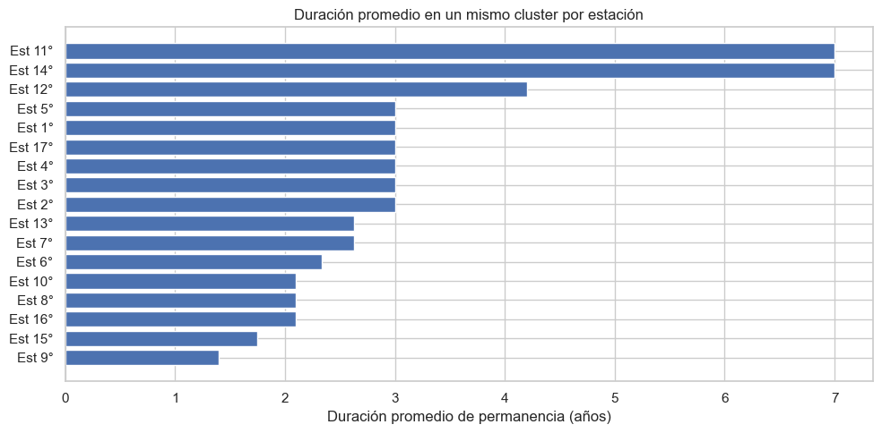
Las estaciones con mayor duración (más de 5 años en el mismo cluster) presentan condiciones relativamente estables en el tiempo.
Contribución a los objetivos del proyecto
✅ Objetivo 1: Caracteriza frecuencias interanuales en TSM y Chl a. ✅ Objetivo 2: Proporciona una regionalización dinámica por año. ✅ Objetivo 3: Evalúa la influencia interanual del ENSO en patrones oceanográficos.
Parte 3. Clustering Dinámico Estacional (Estación × Año × Estación del Año)
Objetivo
Explorar la variabilidad espacio-temporal en una escala intra-anual, es decir, entre las cuatro estaciones climáticas del año (Primavera, Verano, Otoño e Invierno). Cada observación representa una combinación de estación geográfica, año y estación del año.
Preparación de los datos
Para cada combinación (estación, año, estación del año), se calcularon las siguientes variables:
- TSM: media y desviación estándar estacional
- Chl a: media y desviación estándar estacional
- ONI: valor promedio del trimestre correspondiente
- Latitud y longitud de la estación
Las variables fueron estandarizadas y se aplicó un modelo K-Means con k = 4 clusters.
Caracterización de clusters estacionales
Se identificaron cuatro perfiles dominantes:
| Cluster | TSM (°C) | Chl a (mg/m³) | ONI | Descripción general |
|--------:|----------|----------------|--------|-------------------------------------------------------|
| 0 | 24.01 | 2.41 | -0.30 | Cálido, con alta productividad y ligera influencia Niña |
| 1 | 28.42 | 0.66 | -0.04 | Muy cálido, baja productividad, posiblemente verano |
| 2 | 20.66 | 1.51 | +0.73 | Frío y productivo, probable invierno bajo Niño |
| 3 | 20.20 | 1.37 | -0.73 | Frío con baja productividad, asociado a Niña fuerte |Distribución por estación del año
La siguiente gráfica muestra cómo se distribuyen los clusters en cada una de las estaciones del año:
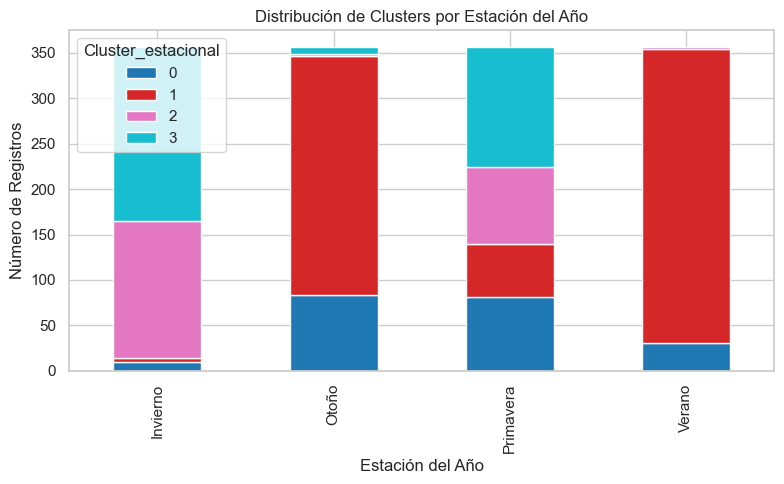
Se observa que:
- El cluster 1 domina en verano y otoño.
- Invierno muestra mayor participación de clusters fríos y productivos (2 y 3).
Evolución estacional interanual
El siguiente gráfico muestra cómo han cambiado los clusters estacionales a lo largo del tiempo:
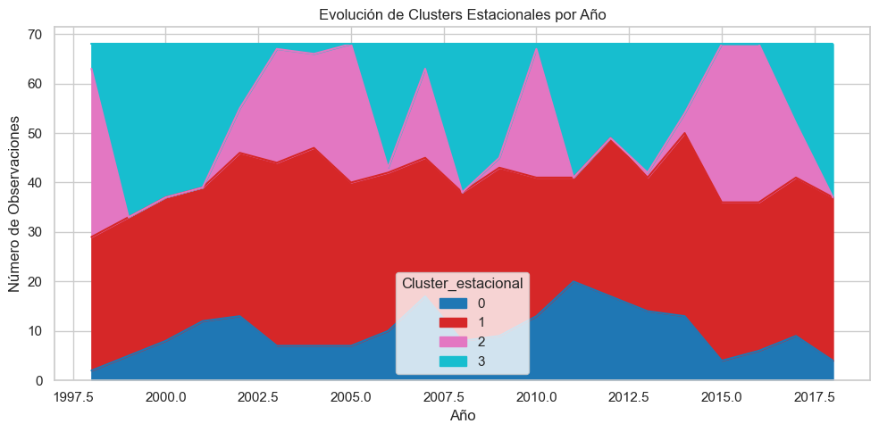
Esta vista permite analizar la frecuencia de cada condición ambiental por estación del año a lo largo del periodo.
Variabilidad espacio-temporal
En el siguiente heatmap se muestra cómo ha cambiado el cluster asignado en cada (estación, año, estación del año):
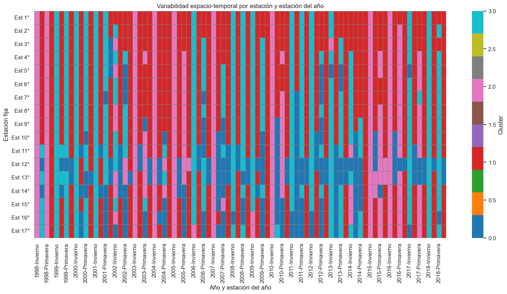
Este análisis revela que estaciones del norte (Est 1° a Est 5°) presentan menor variabilidad, mientras que las estaciones del centro y sur tienen mayor dinamismo.
Mapa de inestabilidad estacional
Se calculó el número total de cambios de cluster entre estaciones del año para cada estación geográfica:
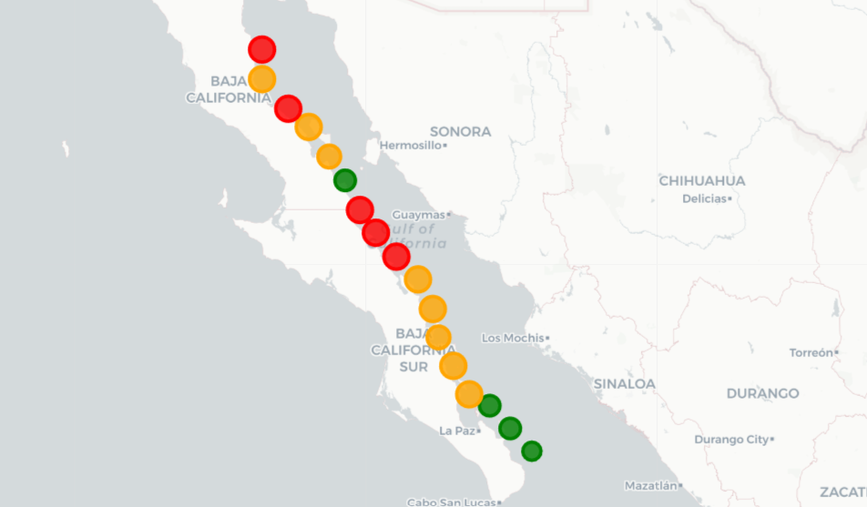
- Estaciones en rojo: más de 60 cambios estacionales.
- Estaciones en verde: menor inestabilidad intra-anual.
Matriz de transición entre estaciones del año
| Cluster Actual → Siguiente | 0 | 1 | 2 | 3 |
|----------------------------|-----|-----|-----|-----|
| 0 | 48 | 74 | 23 | 29 |
| 1 | 48 | 122 | 55 | 102 |
| 2 | 44 | 181 | 6 | 6 |
| 3 | 55 | 269 | 5 | 4 |Se observa que la mayoría de las transiciones tienden hacia el Cluster 1, lo cual sugiere que muchas estaciones pasan a un estado más cálido con baja productividad. El Cluster 2 tiene muy baja retención.
Contribución a los objetivos del proyecto
✅ Objetivo 1: Describe variabilidad intra-anual de TSM y Chl a. ✅ Objetivo 2: Permite una regionalización sensible a la estacionalidad. ✅ Objetivo 3: Evalúa el efecto estacional del ENSO con base en la clasificación ONI.
Parte 4. Clustering Dinámico Mensual (Estación × Año × Mes)
Objetivo
Este análisis busca identificar patrones espacio-temporales de alta frecuencia, permitiendo estudiar la variabilidad mensual en cada estación. Esto ofrece un enfoque más detallado que captura transiciones rápidas y posibles impactos de eventos climáticos de corta duración como episodios ENSO.
Preparación de los datos
Para cada combinación (estación, año, mes) se calcularon:
- TSM promedio mensual
- Chl a promedio mensual
- ONI promedio mensual (expansión del índice trimestral)
- Coordenadas de la estación
Las variables fueron estandarizadas. Posteriormente, se aplicó KMeans con k = 4.
Caracterización de clusters mensuales
| Cluster | TSM (°C) | Chl a (mg/m³) | ONI | Descripción general |
|--------:|----------|----------------|--------|--------------------------------------------------|
| 0 | 28.91 | 0.64 | -0.15 | Muy cálido, baja productividad |
| 1 | 20.91 | 3.65 | -0.10 | Frío y altamente productivo |
| 2 | 20.24 | 1.39 | -0.84 | Frío con productividad media, asociado a Niña |
| 3 | 22.41 | 1.26 | +1.11 | Moderadamente cálido, posible influencia de Niño |Heatmap mensual de variabilidad espacio-temporal
El siguiente gráfico presenta la variación de los clusters mes a mes para cada estación geográfica:
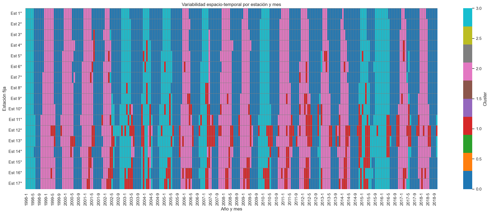
Este análisis revela alta dinámica, especialmente en las estaciones del centro y sur del Golfo de California.
Distribución mensual de clusters
Se visualizó cómo se distribuyen los clusters a lo largo de los 12 meses del año:
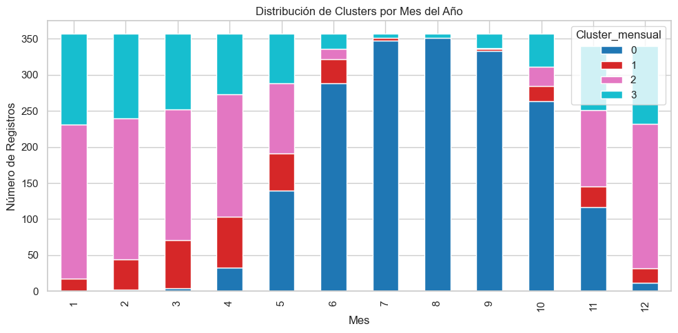
- El cluster 0 predomina en verano.
- El cluster 1 es más frecuente durante los meses invernales.
Evolución interanual mensual agregada
Se agruparon los datos por año para evaluar la evolución de las condiciones ambientales promedio:
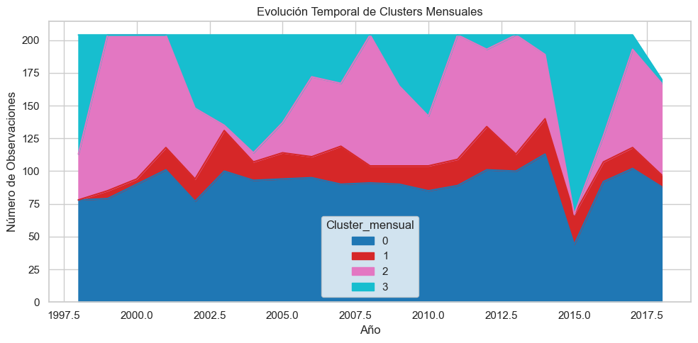
El gráfico permite detectar eventos abruptos o cambios multianuales, como transiciones post-ENSO.
Estabilidad mensual por estación
Se contabilizaron los cambios de cluster entre meses consecutivos para cada estación:
| Estación | Cambios Mensuales Totales |
|----------|----------------------------|
| Est 12° | 89 |
| Est 13° | 77 |
| Est 16° | 77 |
| Est 17° | 77 |
| ... | ... |
| Est 1° | 36 |Visualmente, se presenta en el siguiente mapa:
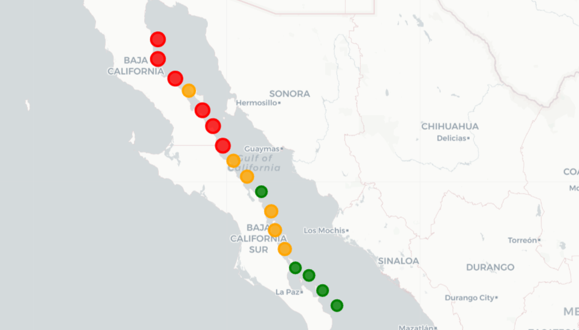
- Rojo: estaciones con mayor inestabilidad.
- Verde: estaciones con patrones más estables mes a mes.
Matriz de transición mensual
| Cluster Actual → Siguiente | 0 | 1 | 2 | 3 |
|----------------------------|------|-----|-----|-----|
| 0 | 1533 | 43 | 176 | 115 |
| 1 | 58 | 134 | 85 | 58 |
| 2 | 182 | 97 | 714 | 12 |
| 3 | 119 | 65 | 16 | 486 |Este resultado muestra que:
- El cluster 0 tiene la mayor retención mensual (persistencia cálida).
- El cluster 1 presenta mayor movilidad entre estados.
Contribución a los objetivos del proyecto
✅ Objetivo 1: Se caracteriza la variabilidad mensual detallada de TSM y Chl a. ✅ Objetivo 2: Se genera una regionalización de alta resolución espacio-temporal. ✅ Objetivo 3: Se detectan transiciones asociadas con eventos Niño y Niña en escala mensual.